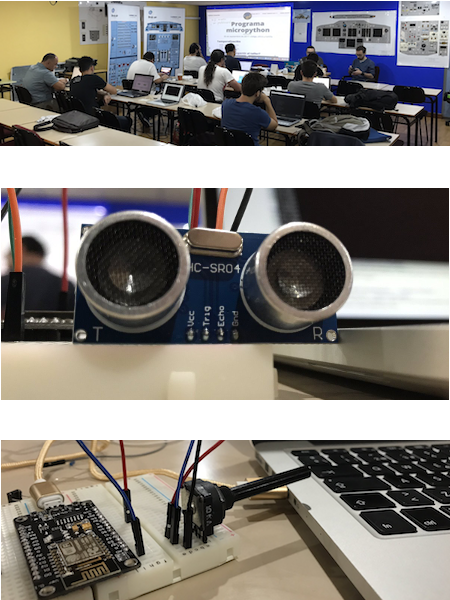

MicroPython 2018
Presentamos la segunda edición del taller de MicroPython 2018 (#uPythonTF).
Tras el éxito de la primera edición, volvemos a la carga con esta segunda edición por petición popular. Si te gusta Python y te gusta el cacharrero, ¡¡éste es tu curso!!
¿Qué es MicroPython?
MicroPython es un pequeño pero eficiente intérprete del lenguaje de programación Python que incluye un subconjunto mínimo de librerías y que además está optimizado para que pueda correr en microcontroladores y ambientes restringidos.




Programa
Sábado 9 de Junio 2018
Primera sesión
09:30 - 11:30
Coffe-break
11:30 - 12:00
Segunda Sesión
12:00 - 14:00
¿Cómo llegar?
intech TF CoworkIN
Dirección:
Calle vía interior Cueva Bermeja, 24,
38180 Dársena Pesquera
Santa Cruz de Tenerife
Transporte:
Líneas 910 y 945 de TITSA desde el intercambiador de Santa Cruz
La parada es "Instituto Oceanográfico"
Si pagas con bono 0.75€, si pagas en efectivo 1.25€
¿Cómo inscribirse en el curso?
Proximamente habilitaremos el enlace para comprar los kits e inscribirse en el curso. El kit se compone de:
- Módulo inalámbrico NodeMcu 4 M bytes Lua WIFI
- LED super brillante núcleo grande Verde (x5)
- LED RGB ultra brillante
- Potenciómetro Lineal 15mm Eje
- Resistencia de película metálica 500Ω, 1KΩ, 2KΩ, 5KΩ y 10KΩ (x2)
- Micro interruptor táctical 2 pin (x2)
- LDR fotoresistor GL5528
- 20 cables 20cm 2,54mm macho macho para Arduino
- Protoboard 400 agujeros x2.
- Sensor de distancia ultrasonido HC-SR04
- Módulo Zumbador digital
Organiza
Colabora